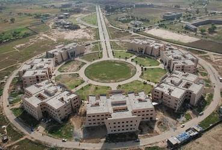
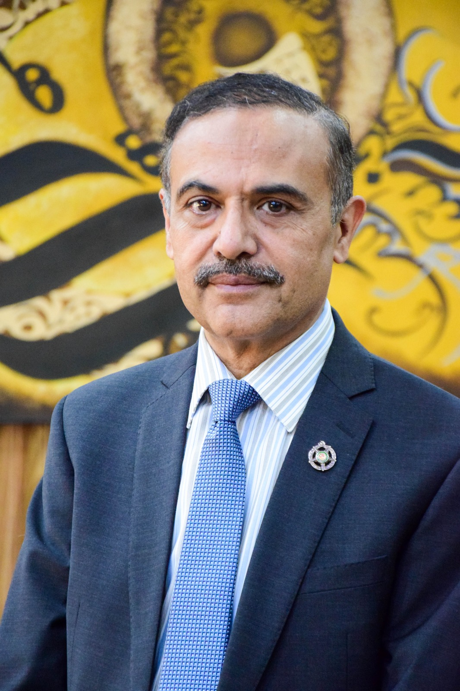

|
|
University of Gujrat |
Home |
UET |
PU |
Quaid e Azam |
About University of Gujrat:The University of Gujrat (UOG), established in 2004, is a leading public sector university in Pakistan. Located at the historic Hafiz Hayat Campus, it serves as a vital academic hub for the industrial "Golden Triangle" of Gujrat, Sialkot, and Gujranwala. The university offers a wide range of programs in Engineering, IT, Social Sciences, and the Arts. It is particularly well-regarded for its School of Art, Design, and Architecture (SADA) and its commitment to bridging the gap between local industry and modern research. UOG continues to empower the youth of Northern Punjab by providing world-class education and fostering socio-economic growth. |
 |
|
VICE CHANCELOR:PROF. DR. ZAHOOR UL HAQ |
VC'S MESSAGE:It is both an honour and a privilege to serve as the Vice Chancellor of the University of Gujrat. I am deeply committed to fostering academic excellence, research, and innovation wherever I serve. This marks my second stint as Vice Chancellor, and I am determined to build on the strong foundations laid by my predecessors to propel this university to new heights |
ABOUT VC:Prof. Dr. Zahoor ul Haq (T.I.) currently serves as the Vice Chancellor of the University of Gujrat, having officially assumed the four-year role in January 2025. A distinguished academician with a Ph.D. in Agricultural Economics and Business from the University of Guelph, Canada, he was previously the Vice Chancellor of Abdul Wali Khan University Mardan. His tenure at UoG has been marked by a strong emphasis on academic reform and administrative accountability, earning him the Tamgha-e-Imtiaz for his extensive contributions to the Pakistani higher education sector. |
Programs Offered: |
|||
|
Computing
Faculty of computing.
|
Engineering
Faculty of Engineering
|
management
Faculty of management sciences.
|
Arts
Faculty of Arts.
|
| Contact info: | |||
| University of Gujrat | Hafiz Hayat Campus, Gujrat, Pakistan | Phone: +92 53 111 444 444 | Email:info@uog.edu.pk |